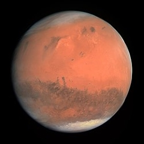

Mars
Mars is the fourth planet from the Sun and last of the terrestrial planets. Like the rest of the planets in the solar system (except Earth), Mars is named after a mythological figure - the Roman god of war. In addition to its official name, Mars is sometimes called the Red Planet because of the brownish-red color of its surface. Mars is the second smallest planet in the solar system behind Mercury.
- Mars is the fourth planet from the Sun and last of the terrestrial planets and is around 227,940,000 km from the Sun.
- The planet is named after Mars, the Roman god of war. It was known to the ancient Greeks as Ares, their god of war. This is thought to be because of the blood-red color of the planet which was also used by other ancient cultures. Chinese astronomers call Mars the “fire star” while ancient Egyptian priests called it “Her Desher” meaning “the red one”.
- The landmass of Mars and Earth is very similar. Despite Mars being just 15% the volume and 10% the mass of Earth, it actually has a similar landmass because water covers about 70% of Earth’s surface. The surface gravity of Mars is about 37% the gravity found on Earth. This means that on Mars you could in theory jump 3x higher than you could on Earth.
- Only 16 of the 39 Mars missions have been successful. Beginning with the USSR’s Marsnik 1 which was launched in 1960, 39 orbiters, landers and rovers have been to Mars but only 16 of those missions were a success. In 2016, Europe’s Exobiology on Mars program will search the planet for signs of Martian life as well as study the surface and terrain of the planet and map potential environmental hazards to future manned missions to Mars.
- Pieces of Mars have been found on Earth. It is believed that trace amounts of the Martian atmosphere were within meteorites that the planet ejected. These meteorites then orbited the solar system for millions of years amongst the other objects and solar debris before eventually entering the Earth’s atmosphere and crashing to the ground. The study of this material has allowed scientists to discover more about Mars before launching space missions.
- Mars was once believed to be home to intelligent life. This came from the discovery of lines or grooves in the surface called canali by Italian astronomer Giovanni Schiaparelli. He believed that these were not naturally occurring and were proof of intelligent life. However, these were later shown to be an optical illusion.
- The tallest mountain known in the solar system is on Mars. Olympus Mons is a 21 km high and 600 km diameter shield volcano that was formed billions of years ago. Scientists have found a lot of recent evidence of volcanic lava which suggests Olympus Mons may still be active. It is the second highest mountain in the entire solar system, topped only by the Rheasilvia central peak on the asteroid Vesta, which is 22 km high.
- Mars experiences huge dust storms – the largest in our solar system. This is due to the elliptical shape of the planet’s orbit path around the Sun. The orbit path is more elongated than many of the other planets and this oval shaped orbit results in fierce dust storms that cover the entire planet and can last for many months.
Source: https://theplanets.org/mars/